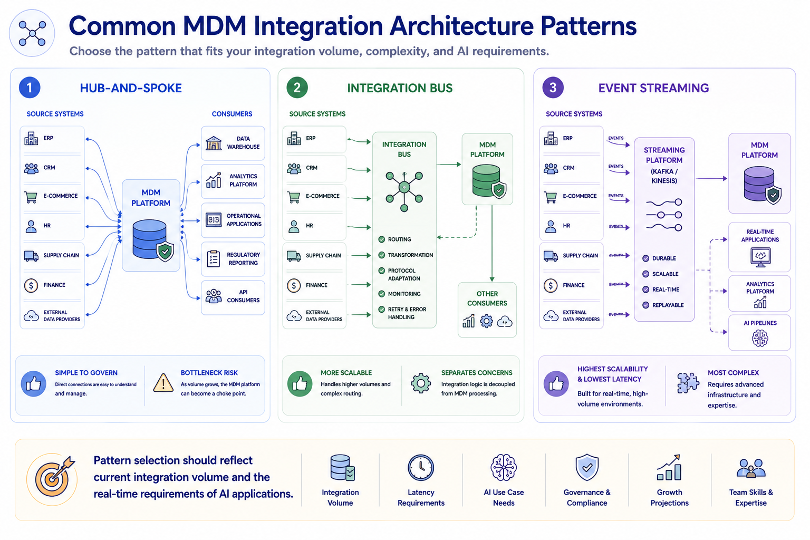
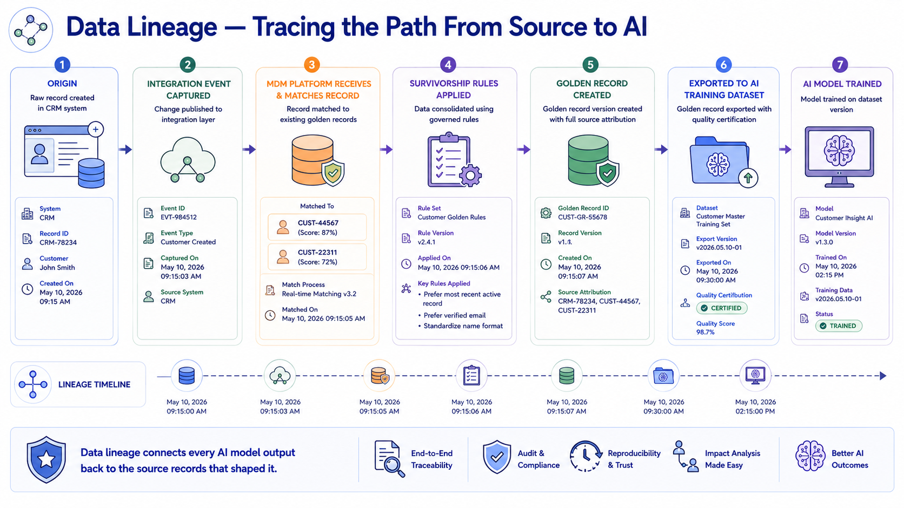
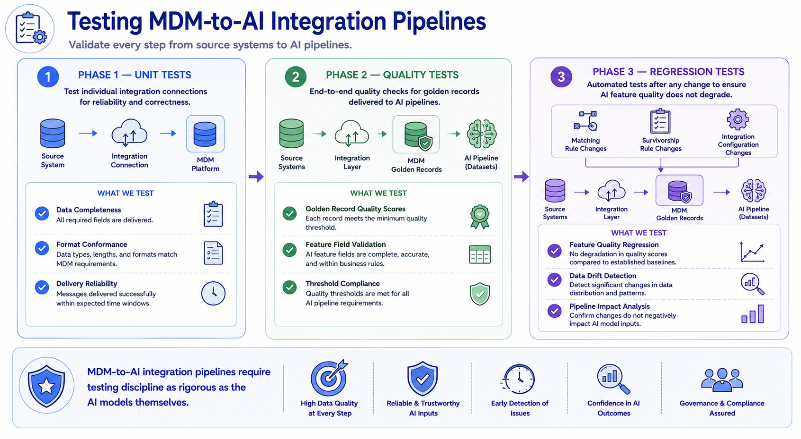

Data Integration Tools
Module support notes
Integration Architecture Patterns for MDM
MDM integration architecture has evolved significantly with the rise of event-driven systems and cloud-native data platforms. Traditional hub-and-spoke integration remains appropriate for organizations with a limited number of source systems and batch-oriented AI programs. As integration volume grows and real-time AI requirements emerge, an integration bus or event streaming pattern becomes necessary.
Event streaming architectures are becoming the preferred pattern for organizations whose AI applications require sub-second access to current governed data — because they eliminate the latency inherent in scheduled batch processes and the coupling complexity of direct API integration at scale.
- Hub-and-Spoke — all source systems integrate directly with the MDM platform; simple to govern but creates a bottleneck as integration volume grows
- Integration Bus — source systems connect to a central bus that routes data to MDM and other consumers; more scalable, separates integration logic from MDM processing
- Event Streaming — source systems publish events to a streaming platform and MDM subscribes to relevant streams; highest scalability and lowest latency, most complex to implement
Note
Pattern selection should reflect current integration volume and the real-time requirements of AI applications. Starting with hub-and-spoke and evolving toward event streaming as AI latency requirements increase is a valid architectural journey — attempting to implement event streaming before the organization has the engineering maturity to operate it reliably creates more risk than it eliminates.

Data Lineage in the Integration Layer
Data lineage in the MDM integration layer serves two distinct purposes. The first is operational governance — the ability to trace how any golden record was constructed, which source records contributed to it, and which survivorship rules were applied. The second is AI accountability — the ability to trace any AI model's outputs back to the specific training data version, and that training data version back to the governed golden records and source systems that produced it.
As AI regulation and model explainability requirements grow, this end-to-end lineage from source record to AI output is becoming a governance requirement rather than a best practice. Organizations that build lineage tracking into their MDM integration architecture from the beginning are significantly better positioned for AI accountability requirements than those that attempt to reconstruct lineage after models are already in production.
Tip
Build lineage tracking into MDM integration architecture from day one — not as a retrofit. Every integration event, matching decision, survivorship rule application, and golden record export should be logged with enough metadata to reconstruct the full chain from source record to AI model output. Retrofitting lineage onto an existing pipeline is expensive and almost never complete.

Integration Testing for AI Data Pipelines
Integration pipelines that deliver governed data to AI systems are as critical to AI program quality as the models themselves — and they deserve the same testing discipline. Unit tests verify that individual integration connections are delivering data completely and in the expected format. Quality tests verify end-to-end that the golden records arriving in AI training environments meet the quality thresholds established during data quality assessment.
Regression tests run automatically after any change to matching rules, survivorship configurations, or integration logic — confirming that the change has not inadvertently degraded the quality of AI feature inputs below the baselines the model was designed to depend on.
Warning
MDM-to-AI integration pipelines require testing discipline as rigorous as the AI models themselves. Organizations that treat the data pipeline as background plumbing consistently experience more AI quality failures in production than those that treat integration testing as a first-class engineering discipline. A model is only as reliable as the pipeline that feeds it.

Integration is not infrastructure — it is the data supply chain that determines what MDM governance can actually govern and what AI systems can actually trust.